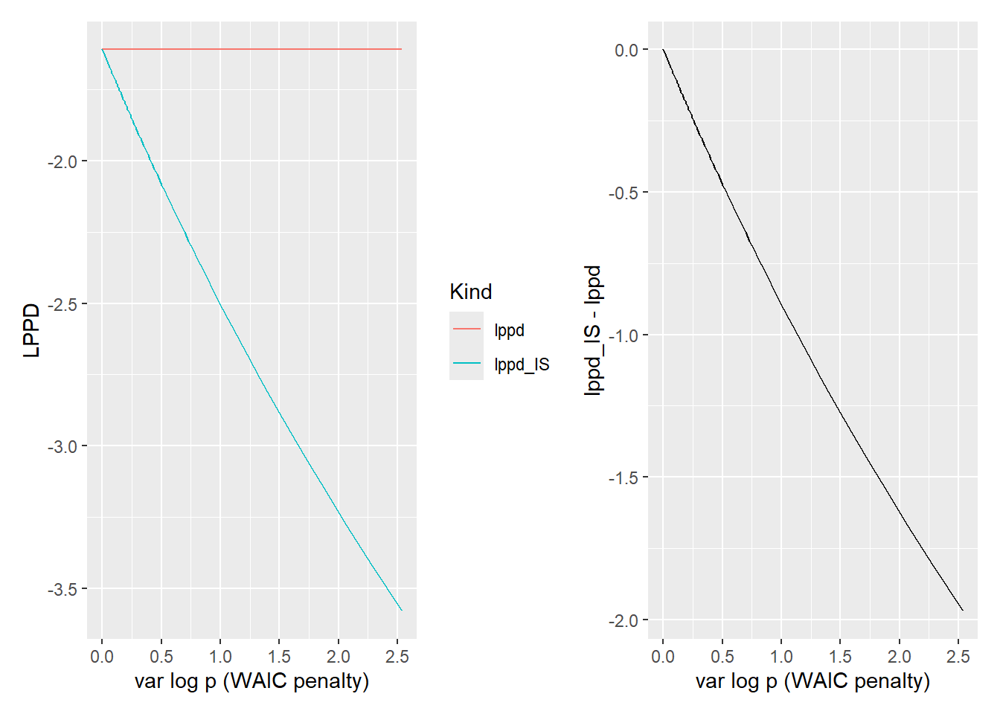

8 Information Criteria
These are notes on information criteria. Their purpose is to provide some intuition about the information criteria, supplementing information presented in chapter 7 of the Statistical Rethinking book by Richard McElreath. I deliberately oversimplified and overgeneralized certain aspects to paint a “bigger picture”.
8.1 Deviance
In the chapter, deviance is introduced as an estimate for KL-divergence, which in turn is a relative entropy, i.e., the difference between cross-entropy and actual entropy of events. Keep that in mind but you could look at deviance itself as a straightforward goodness-of-fit measure, similar to squared residuals (RMSE, Root Mean Square Error) and coefficient of determination \(R^2\). In both cases, you have difference between model prediction (the regression line) and an actual data point. In ordinary least squares (OLS) approach, you quantify this imperfection of prediction by squaring residuals. You sum up all residuals to get the sum of squared residuals (\(SS_{res}\)) and then you can compute \(R^2\) by comparing it to the total sum of residuals in the data (\(SS_{total}\)): \[R^2 = 1 - \frac{SS_{res}}{SS_{total}} = \frac{SS_{total} - SS_{res}}{SS_{total}}\] As the total sum of residuals \(SS_{res}\) gets close to zero, the fraction gets close to 1. The disadvantage of squared residuals and \(R^2\) is that tricky to use with non-metric data, such as binomial, ordered categorical data, etc., or when deviations from the prediction might be asymmetric (binomial data, response times, etc.). Instead, you can use likelihood to compute the probability that a data point comes from a distribution defined by a model. Then, you compute the (total) joint probability by multiplying all probabilities or, better still, by computing the sum of their log-transform (log likelihood)1. Then, you can compare the observed log likelihood to the highest theoretically possible log likelihood for a saturated model (\(\Theta_s\)), which has as many parameters as there are data points, so that it predicts each point perfectly. This is the original definition of (total) deviance: \[D = -2 \cdot (log(p(y|\Theta)) - log(p(y|\Theta_s)))\]
Recall that \(log(\frac{a}{b}) = log(a) - log(b)\), so we can rearrange it and see that it is a log-ratio of likelihoods: \[D = -2 \cdot log \left(\frac{p(y|\Theta)}{p(y|\Theta_s)}\right)\] As \(p(y|\Theta)\) increases, the fraction inside get closer to 1. The \(log()\) bit flips and non-linearly scales it. The minus sign flips it back and we end up with smaller numbers meaning better fit.
The \(2\) is there to facilitate significance testing for nested models. Models \(\Theta1\) and \(\Theta2\) are nested, if \(\Theta2\) has all predictors of \(\Theta1\) plus k predictors. E.g., model \(Divorce = Marriage~Rate\) is nested inside \(Divorce = Marriage~Rate + Marriage~Age\) with later model having 1 more parameter. Your actual model \(\Theta\) is nested inside the saturated model \(\Theta_s\) that has \(k = n - k_{model}\) more parameters, where \(n\) is sample size and \(k_{model}\) is number of parameters in your model. It turns out that in this case, you can determine whether the difference in goodness-of-fit between two models is significant using \(\chi^2\) distribution with k degrees of freedom. The only catch is that log-ratio is half the magnitude, so you need that \(2\) to match things up2.
At this point, you might remember that the definition of deviance for a single model in the book was: \[D = -2 \cdot log(p(y|\Theta))\]
Unfortunately, same term can be used both ways, to refer to a log likelihood of a single model or, technically more correctly, to the log-ratio you saw above. In reality, you will mostly see the deviance defined as in the book because it is used to compare nested models via \(\chi^2\) distribution as I’ve described above, with only difference that you compare any two nested models, not just to a saturated one. This is how nested models are frequently compared, for example, see anova() function in R.
Note that a deviance for a single model still expresses the same idea of goodness-of-fit but is merely not normalized by the deviance of the saturated model. Thus deviance as in the book \(D = -2 \cdot log(p(y|\Theta))\) corresponds to sum of residuals (absolute values mean nothing but you can use them to compare two models on the same data), whereas total deviance corresponds to the \(R^2\) (values are directly interpretable).
8.2 General idea: information criteria as miles-per-gallon
The general formula for all information criteria discussed below is \[-2\cdot log \left( \frac{goodness~of~fit}{model~complexity} \right)\]
The goodness-of-fit in the numerator is the likelihood, the joint probability of observing the model given each data point \(\prod_i p(\Theta|y_i)\). The denominator expresses model complexity, i.e., its flexibility in fitting the sample and, therefore, its tendency to overfit. Thus, the fraction itself is goodness-of-fit per unit of model complexity. This is like miles-per-gallon for car efficiency, so better models are more efficient models, churning out more goodness per complexity.
The numerator is the same3 for all information criteria discussed below and they differ only in how they compute the model complexity.
8.3 Akaike Information Criterion (AIC)
The formula most commonly used4 is \[ AIC = -2\cdot log(p(\Theta|y)) + 2k \] where \(k\) is the number of parameters of the model. If you are not a mathematician who is used to translate back-and-forth using logarithms, you may fail spot the ratio I was talking about earlier. For this, you need to keep in mind that \(log(\frac{a}{b}) = log(a) - log(b)\) and that \(a = log(exp(a))\). Let us re-arrange a bit to get the log-ratio back: \[ AIC = -2\cdot log(p(\Theta|y)) + 2k \] \[ AIC = -2 (log(p(\Theta|y)) - k)\] \[ AIC = -2 (log(p(\Theta|y)) - log(exp(k))\] \[ AIC = -2 \cdot log \left(\frac{p(\Theta|y)}{exp(k)} \right)\] And here it is, the log-ratio I’ve promised! As you can see, AIC assumes that model complexity grows exponentially with the number of parameters.
If you are to use AIC, the current recommendation is to correct it with an extra penalty for the size of the sample \[AICc = AIC + \frac{2k^2 + 2k}{n - k - 1}\] where \(n\) is the sample size. I won’t do it here but you should be able to work out how it is added to the exponent in the denominator.
8.4 Bayesian information criterion (BIC)
A.k.a. Schwarz information criterion (SIC, SBC, SBIC)5. The motivation is the same as with AIC but the penalty (complexity term), in addition to the number of parameters, also reflects the sample size \(n\).
\[BIC = -2\cdot log(p(\Theta|y)) + log(n) k \]
Let us do re-arranging again \[BIC = -2\cdot log(p(\Theta|y)) + log(n) k \] \[BIC = -2 \left( log(p(\Theta|y)) + log(n) \frac{k}{2} \right) \] \[BIC = -2 \left( log(p(\Theta|y)) - log \left(exp(log(n) \cdot \frac{k}{2} \right) \right) \]
For the complexity term, we need to keep in mind that \(exp(a \cdot b) = exp(a)^b\). Thus, \[exp \left(log(n) \cdot \frac{k}{2} \right)= exp(log(n)) ^ \frac{k}{2} = n^\frac{k}{2}\] Putting the complexity term back, we get \[BIC = -2 \left( log(p(\Theta|y)) - log \left(n^\frac{k}{2} \right) \right)\] \[BIC = -2 \cdot log \left(\frac{p(\Theta|y)}{n^\frac{k}{2}} \right)\] Thus, we end up with very similar power law complexity term which uses sample size instead of Euler’s number as the base.
8.5 Problem of AIC and BIC: one size may not fit all
Both AIC and BIC assume that model complexity and flexibility, that leads to overfitting, is reflected in the number of parameters k. However, this is a fairly indirect measure of model flexibility, based on how models in general tend to overfit data in general. But you probably want to know how your specific model uses its parameters to fit your specific sample and how much overfitting you should expect in that specific case. Because even if a parameter is present in the model, it may not be able to fully use it in case of regularization or multilevel (adaptive regularization) models.
Regularization, in form of strong priors, lasso/ridge regression, etc., restricts the range of values that a given parameter can take. Thus, a model cannot exploit it as much as other parameters and will be less able to use it to improve fit to the sample. Similarly, in hierarchical multilevel modeling, you may have dozens or hundreds of parameters that describe intercepts and/or slopes for individual participants (random factors, in general), but most of them could be trivially zero (same as or very similar to the group average) and contribute little to the actual fit. In these cases, a simple raw count, which treats all parameters as equals, will overestimate model complexity.
The desire to go beyond one-size-fits-all approach and be as model- and data-specific led to development of deviance information criterion (DIC) and widely-applicable information criterion (WAIC). Both use the entire posterior distribution of in-sample deviance and base their penalty on how variable this posterior distribution is. Higher variance, meaning that a model produces very different fits ranging from excellent to terrible, hints that model is too flexible for its own good and leads to higher complexity estimate (penalty for overfitting). Conversely, very similar posterior deviance (low variance) means that model is too restricted to fine-tune itself to the sample and its complexity is low.
If you understand why variance of the posterior distribution of divergence is related to models’ flexibility and, therefore, to the number of effective parameters, just skip the next section. If not, I came up with a musical instruments metaphor that I and at least some people I’ve tested it upon found useful.
8.6 Musical instruments metaphor
Imagine that you are trying to play a song that you have just heard. But the only instrument you have is a triangle. This is not a particularly flexible instruments pitch-wise, so your rendition of that song will not be very good (your model underfits the data). The good news is that even if you do your worst and do not really try, no one will notice because your worst performance will sound very much like your best one. Simply because it is very hard to make songs sound different using a triangle. Thus, if you play that song many times, trying different versions of it with us judging how close you are to the original, the score we will give you will probably be not particularly high but very similar (low variance of the deviance for fitting to sample).
What if I give you an instrument that can vary the pitch at least a bit, like a xylophone for children. Now you have more freedom and your version of the music will sound much more like the original. But, it also gives you an opportunity to make a mess of it, so your rendition might sound nothing like the music you’ve just heard. In other words, a more flexbile instrument increases the difference between the best and the worst possible performance, so the variance of your performances (on how close they are to the original) also increases (higher variance of the deviance). A more flexible instrument will make the difference even bigger. Think violin or trombone which are not restricted to the scale, so you can play any sound in-between and you can match the music you just heard exactly. Imagine that the music your just heard has odd off-the-scale sounds. Was it a defect of the turntable, which cannot go at constant speed, so overall pitch wobbles overtime (noise)? Or is it an experimental music piece that was deliberately designed to sound odd (signal)? If you do not know for sure, you will try to play as close to the original music your heard as possible, matching those off-scale sounds. And, because you can play any sound, your range of possible performance is even larger from one-to-one to “please, have mercy and stop!” (even larger variance of deviance).
In short, variance of your performance (posterior divergence) reflects how flexible your instrument is. But why is it indicative of the effective number of parameters? Here are regularizing priors in the world of music instrument metaphor. Imagine that in addition to the triangle, I also give you a rubber bell6. Now, technically you have two instruments (your number of parameters is 2) but that bell does not affect your performance (we put very strong regularizing priors so that coefficients are zero or something very-very close to zero). Thus, your ability to play the song did not change and your variance of performance stays the same. Two actual instruments, but only one “effective” one. Or, I give you a piano but allow you to use only one octave and only white keys. Yes, you have a piano but with this regularization it is as complex as as kids’ xylophone. The potential number of notes you can play is great (AIC and BIC would be very impressed and slap a heavy penalty on you) but the actual “effective” range is small. Or, you regularize yourself to play scale-only notes using violin (something you learn to do). In all of these cases, you deliberately restrict yourself. But why? Why not just play as you heard it? I.e., why not fit as well as you can? Because if the song you heard is short (sample is small), regularization based on your knowledge about real life helps you to ignore the noise that is always present. E.g., you know that song is for kids’ xylophone, so even if you heard notes outside of a single octave that was probably a problem with recording. Or, you never heard that piece for violin but you do know other works of this composer and they always use scale-only notes, so you should not use violin to play off-scale sounds in that case.
Multilevel models also limit the actual use of parameters. Imagine you heard a recording of a symphonic orchestra. Lots of violins but you figured out that most of them actually play the same melody. So you can get away with using one violin score (sample group average) and assume that most violins play like that (most participants are very close to group average). Any deviations from that group melody are probably mistakes by individual musicians, not the actual melody. Same goes if you hear a choir. Again, many people sing (lots of parameters!) but, mostly, in unison, so you do not need to create an individual score sheet (parameter) for each singer, just one per group of singers.
Wrapping up the metaphor, the more flexible your instrument is, the more variable your performance can be, the easier it is for you to mimic noise and imperfections of the recording that have nothing to do with the piece itself. But when you play it next time, matching the recording with all its noise and distortions perfectly, people who know the piece will be puzzled or may not even recognize it (poor out-of-sample predictions). Adopting the melody for a more limited instrument may make it easier for others to recognize the song! Thus, higher variance in performance accuracy (higher variance of deviance) indicates that you can overfit easily with that instrument (model) and you should be extra careful (impose higher penalty for complexity).
8.7 Deviance information criterion (DIC) and widely-applicable information criterion (WAIC)
The two are very similar, as both compute the model complexity based on posterior distribution of log likelihood. The key difference is that DIC sums the log likelihood for each model (sample) first and then computes the variance over samples. WAIC computes variance of log likelihood per point and then sums those variances up. In the musical instrument metaphor, for DIC you perform the piece many times (generate many posterior samples), compute accuracy for each performance (deviance for a single sample), and then compute how variable they are. For WAIC, you go note by note (observation by observation). For each note you compute variance over all samples to see how consistent you are in playing it. Then, you sum this up.
\[DIC = -2 \cdot \left( log(p(y|\Theta)) - var(\sum log(p(y|\Theta_i))) \right)\] \[WAIC = -2 \cdot \left( log(p(y|\Theta)) - \sum_i var(log(p(y_i|\Theta))) \right)\]
The penalty replaces \(k\) in AIC and, therefore, will go into the exponent inside the ratio. Again, same idea, that increase in variance of deviance (either per sample in DIC or per point in WAIC) leads to exponentially increasing estimate of complexity.
WAIC is more stable mathematically and is mode widely applicable (that’s what statisticians tell us). Moreover, its advantage is that it explicitly recognizes that not all data points in your sample are equal. Some (outliers) are much harder to predict than others. And it is variance of log likelihood for these points that determines how much your model can overfit. An inflexible model will make a poor but consistent job (triangles don’t care about pitch!), whereas a complex model can do anything from spot-on to terrible (violins can do anything). In short, you should use WAIC yourself but recognize DIC when you see it and think of it as somewhat less reliable WAIC, which is still better than AIC or BIC when you use regularizing priors and/or hierarchical models.
8.8 Importance sampling
Importance sampling is mentioned in the chapter but is never explained, so here is a brief description. The core idea is to pretend that you sample from a distribution you need (but have no access to or sampling from it directly is very inefficient) by sampling from another distribution (the one you have access to and that you can sample efficiently) and “translating” the probabilities via importance ratios. What does this mean?
Imagine that you want to know an average total score for a given die after you throw it ten times. The procedure is as simple as it gets: you toss the die ten times, record the number you get on each throw, sum them up at the end. Repeat the same toss-ten-times-and-sum-it-up as many times as you want and compute your average. But what if you do not have access to that die because it is the die and is kept under lock in International Bureau of Weights and Measures? Well, you have a die which you can toss and you have a list of importance ratios for each number. These important ratios tell you how much more likely is the number for the die (the one you are after) compared to a die you have in your hand. Let’s say the importance ratio for 1 (so, number 1 comes up on top) is 3.0. This means that whenever your die gives you 1, you assume that the die came up 1 on three throws. If the importance ratio for 2 is 0.5, whenever you see 2 on your die, you record only half the throw (2 comes up twice as rarely for real die than for your die, so two throws that give you 2 amount to a single throw). This way you can toss your die and every toss equates to different number of throws that generated the same number for the die. So, you sample your die but record outcomes for the other die. Funny thing is that you don’t even need to know how fair your die is and what is the probability of individual sides. As long as you know the importance ratios, keep tossing it and translating the probabilities, you will get the samples for the die you are interested in.
Note that if you toss your die ten times, the translated number of tosses for the die does not need to add up to ten. Imagine that, just by chance, you got 1 four times. Given the importance ratio of 3.0 that alone translates into twelve tosses. Solution? You normalize your result by sum of importance ratios and get back you ten tosses.
The very obvious catch is, how do we know the importance ratios? Well, that is situation specific. Sometimes, we can compute them because we know both distributions, it just that one is easier to sample than the target one, so, we optimize the use of computing power7. Sometimes, as in case of PSIS/LOO below, we can use an approximation.
8.9 Pareto-smoothed importance sampling / leave-one-out cross-validation (PSIS/LOO)
The importance sampling I’ve described above is the key to the PSIS/LOO. The idea is the same, we want to sample from the posterior of the model that was fitted without a specific data point \(y_i\) (we write it as \(p(\Theta_{-i,s}|y_i)\)). But we do not really want to refit the model. Instead, we want to use what we already have, samples from the model that was fit on all the data, including point \(y_i\). So, wise minds figured out how to use the importance sampling trick, sampling from \(p(\Theta_s|y_i)\) and translating it to \(p(\Theta_{-i,s}|y_i)\). The only thing we need are importance factors \[r_i = \frac{p(\Theta_{-i,s}|y_i)}{p(\Theta_s|y_i)} \propto \frac{1}{p(y_i|\Theta_s)}\]
The importance ratio tells you the worse you are at predicting a point \(y_i\) in-sample (the smaller the \(p(y_i|\Theta_s)\) is), the more important it is when you consider model’s performance out-of-sample (the larger is \(\frac{1}{p(y_i|\Theta_s)}\)). Here is an intuition behind this. Any observation will be harder to predict, if it was not included into the data the model was trained on. This is because, in its absence the model will use its parameters to fit the data that is present, including fitting noise, if it has spare parameters. So, you expect that out-of-sample deviance (\(p(y_i|\Theta_{-i}\)) should be always worse than in-sample deviance for the same observation (\(p(y_i|\Theta\)). How much worse depends on how “typical” the observation is. If it is typical and “easy” for a model to predict, in its absence the model will still see many similar “typical” observations and will be well prepared to predict it. However, if the observations is atypical, an outlier, the model won’t see too many observations that are alike and will concentrate more on typical points.
More specifically, the penalty for a particular point based on the importance ratios across all samples reflects how variable \(p(y_i|\Theta_s)\) is across the samples. Recall the definition in the book \[lppd_{IS} = \sum^N_{i=1} log \frac{\sum^S_{s=1}r(\theta_s)p(y_i|\theta_s)}{\sum^S_{s=1}r(\theta_s)}\] Substituting the \(r_i = \frac{1}{p(y_i|\Theta_s)}\) we get \[lppd_{IS} = \sum^N_{i=1} log \frac{\sum^S_{s=1}\frac{1}{p(y_i|\Theta_s)}p(y_i|\theta_s)}{\sum^S_{s=1}\frac{1}{p(y_i|\Theta_s)}}\] \[lppd_{IS} = \sum^N_{i=1} log \frac{\sum^S_{s=1}\frac{p(y_i|\theta_s)}{p(y_i|\Theta_s)}}{\sum^S_{s=1}\frac{1}{p(y_i|\Theta_s)}}\] \[lppd_{IS} = \sum^N_{i=1} log \frac{\sum^S_{s=1}1}{\sum^S_{s=1}\frac{1}{p(y_i|\Theta_s)}}\]
\[lppd_{IS} = \sum^N_{i=1} log \frac{S}{\sum^S_{s=1}\frac{1}{p(y_i|\Theta_s)}}\] \[lppd_{IS} = \sum^N_{i=1} log \frac{1}{\frac{1}{S}\sum^S_{s=1}\frac{1}{p(y_i|\Theta_s)}}\]
This might look like some bizarre re-arrangement of the terms but it ends up producing a harmonic mean, so you get a point-wise variance-based penalty very similar to WAIC. You can build your intuition for this by playing with easy to compute numbers. Let us take a vector where all values are the same, i.e., variance is zero and compute \(lppd\) and \(lppd_{IS}\).
p <- c(0.2, 0.2, 0.2) # mean = 0.2, variance = 0
logp <- log(p)
lppd <- log(sum(p)/length(p))
lppd_IS <- log(1 / ( (1 / length(p)) * sum( 1/ p)))mean = 0.2, variance of log(p) = 0lppd = -1.609438 lppd_IS = -1.609438 lppd - lppd_IS = 0 Now let us keep mean the same but very slightly increase variance. As you can see that tiny increase in sample induces a small decrease in \(lppd_{IS}\) (harmonic means is biased towards lower numbers compared to an arithmetic mean). Conceptually, this corresponds to an assumption that since the model is variable about this point, it probably has too much power leading to in-sample overfitting and, therefore, the lower values produced by the harmonic mean are indicative of poor expected out-of-sample performance.
p <- c(0.19, 0.2, 0.21)
logp <- log(p)
lppd <- log(sum(p)/length(p))
lppd_IS <- log(1 / ( (1 / length(p)) * sum( 1/ p)))mean = 0.2, variance of log(p) = 0.001669798lppd = -1.609438 lppd_IS = -1.611107 lppd - lppd_IS = 0.001669449 To understand where does the penalty comes from, it was helpful for me to derive the solution for the case of just two values \([p_1, p_2]\). In this case you can define them as difference to the their mean, just as we did above: \(p_1 = \mu - \epsilon\) and \(p_2 = \mu + \epsilon\). The \(lppd\) should be trivially equal to \(\mu\): \[lppd = \frac{p_1 + p_2}{2}\] \[lppd =\frac{(\mu - \epsilon) + (\mu + \epsilon)}{2}\] \[lppd =\frac{2 \cdot \mu}{2}\] \[lppd = \mu\]
What about \(lppd_{IS}\)? \[lppd_{IS} = \frac{2}{\frac{1}{p_1} + \frac{1}{p_2}}\]
\[lppd_{IS} = \frac{2}{\frac{1}{\mu - \epsilon} + \frac{1}{\mu + \epsilon}}\]
Bringing the two fractions to a common denominator we get \[lppd_{IS} = \frac{2}{\frac{(\mu + \epsilon) + (\mu - \epsilon)}{(\mu + \epsilon)(\mu - \epsilon)}}\] Opening the brackets in the numerator \[lppd_{IS} = \frac{2}{\frac{2 \cdot \mu }{(\mu + \epsilon)(\mu - \epsilon)}}\] Now we can get flip the bottom fraction \[lppd_{IS} = \frac{2 \cdot \frac{(\mu + \epsilon)(\mu - \epsilon)}{2 \cdot \mu}}{\frac{2 \cdot \mu }{(\mu + \epsilon)(\mu - \epsilon)} \cdot \frac{(\mu + \epsilon)(\mu - \epsilon)}{2 \cdot \mu}} \]
\[lppd_{IS} = 2 \cdot \frac{(\mu + \epsilon)(\mu - \epsilon)}{2 \cdot \mu}\] The two goes away \[lppd_{IS} = \frac{(\mu + \epsilon)(\mu - \epsilon)}{\mu}\] Opening the brackets in the numerator \[lppd_{IS} = \frac{\mu^2 + \mu\epsilon - \mu\epsilon - \epsilon^2}{\mu}\] Simplifying \[lppd_{IS} = \frac{\mu^2 - \epsilon^2}{\mu}\] \[lppd_{IS} = \mu - \frac{\epsilon^2}{\mu}\]
Thus when variance (\(\epsilon\), deviation from the mean) increases, the \(lppd_{IS}\) decreases
delta <- seq(0.0, 0.19, length.out = 100)
create_p <- function(dp) {0.2 + c(-dp, 0, dp)}
lppd_df <- bind_rows(
tibble(Variance = purrr::map_dbl(delta, ~var2(log(create_p(.)))),
LPPD = purrr::map_dbl(delta, ~log(sum(create_p(.))/length(create_p(.)))),
Kind = "lppd"),
tibble(Variance = purrr::map_dbl(delta, ~var2(log(create_p(.)))),
LPPD = purrr::map_dbl(delta, ~log(1 / ( (1 / length(create_p(.))) * sum( 1/ create_p(.))))),
Kind = "lppd_IS")) %>%
mutate(SD = sqrt(Variance))
together_plot <-
ggplot(lppd_df, aes(x=Variance, y=LPPD, color=Kind)) +
geom_line() +
xlab("var log p (WAIC penalty)")
difference_plot <-
lppd_df %>%
pivot_wider(names_from = Kind, values_from = LPPD) %>%
mutate(`lppd_IS - lppd` = lppd_IS - lppd) %>%
ggplot(aes(x=Variance, y=`lppd_IS - lppd`)) +
geom_line() +
xlab("var log p (WAIC penalty)")
together_plot + difference_plot
Compare the \(var log p(y_i|\Theta_s)\), which is a WAIC penalty term, with the decrease due to variance-based importance ratios. As you can see the two are very close and, therefore, will produce very similar estimates of out-of-sample performance. A Pareto smoothed importance sampling has an advantage over WAIC is that it less keen on reducing the performance based on a few samples, which are smoothed away. Still, both methods should identify the same problematic (high variance) data points that you should pay closer attention to.
8.10 Bayes Factor
Not an information criterion. However, it is a popular way to compare Bayesian models. Compared to information criteria, the logic is reversed. In case of the information criteria, we are asking which model fits data the best given the penalty we impose for its complexity. In case of Bayes Factor, we already have two models (could be different models with different number of parameters or just with different parameter values) and we are interested how well the data matches models we already have.
Let’s start with the Bayes theorem: \[Pr(M|D)=\frac {\Pr(D|M)\Pr(M)}{\Pr(D)}\] where, D is data and M is the model (hypothesis). The tricky part is the marginal probability (prior) of data \(Pr(D)\). We hardly ever know it for sure, making computing the “correct” value for \(Pr(M|D)\) problematic. When using posterior sampling, we side-step the issue by ignoring it and normalizing the posterior by the sum of the posterior distribution. Alternatively, when comparing two models, you can compute their ratio: \[{\frac {\Pr(D|M_{1})}{\Pr(D|M_{2})}}={\frac {\Pr(M_{1}|D)}{\Pr(M_{2}|D)}} \cdot {\frac {\Pr(M_{1})}{\Pr(M_{2})}}\] here \(\frac{\Pr(D|M_{1})}{\Pr(D|M_{2})}\) are posterior odds, \(\frac {\Pr(M_{1}|D)}{\Pr(M_{2}|D)}\) is Bayes Factor, and \(\frac {\Pr(M_{2})}{\Pr(M_{1})}\) are prior odds. The common \(Pr(D)\) nicely cancels out!
If you assume that both hypotheses/models are equally likely (you have flat priors), the prior odds are 1:1 and your posterior odds are equal to Bayes Factor or, vice versa, Bayes Factor is equal to posterior odds. This means you can just pick their likelihoods from the posterior sampled distribution and compute the ratio.
I am not a big fan of Bayes Factor for conceptual reasons. Although it can compare any two models (as long as the sample is the same), it looks a lot like a Bayesian version of a p-value and, therefore, lends itself naturally to the null-hypothesis testing. And, as far as my reading of literature in my field is concerned, this is how people most frequently use it, as a cooler Bayesian way of null-hypothesis testing. You have no worries about multiple comparisons (it is Bayesian, so no need for error correction!) and it can prove null hypothesis (it is the ratio, so flip it and see how much stronger H0 is)! There is nothing wrong with this per se but the advantage of Bayesian statistics and information criteria is that you do not need to think in terms of null hypothesis testing and nested models. Adopting Bayes Factor may prevent you from seeing this and will allow you to continue doing same analysis just in a differently colored wrapper. Again, there is nothing wrong with exploratory analysis using null hypothesis testing until you can formulate a better model. But it should not be the only way you approach modeling.
Mathematically equivalent but the sum of logs is far more numerically stable.↩︎
I did not follow the derivation of that correspondence yet, so I cannot comment on how and why.↩︎
Almost, the minor difference is whether you use the entire posterior averaging over samples (DIC, WAIC, PSIS-LOO) or only a single maximum a posteriori sample (AIC, BIC).↩︎
And the one you should use to actually compute it, as it offers a better computation stability.↩︎
McElreath writes that “BIC…it’s not actually an “information criterion.”“. So far, I was not able to figure out why.↩︎
It was used during a super-secret meeting in Stanislaw Lem’s Eleventh Voyage of Ijon Tichy, so that no one would hear when they ring that bell!↩︎
A canonical example is using importance ratios to sample tails of a distribution, which you have access to but the data points from tails comes up by chance so rarely that sampling them directly is very inefficient.↩︎